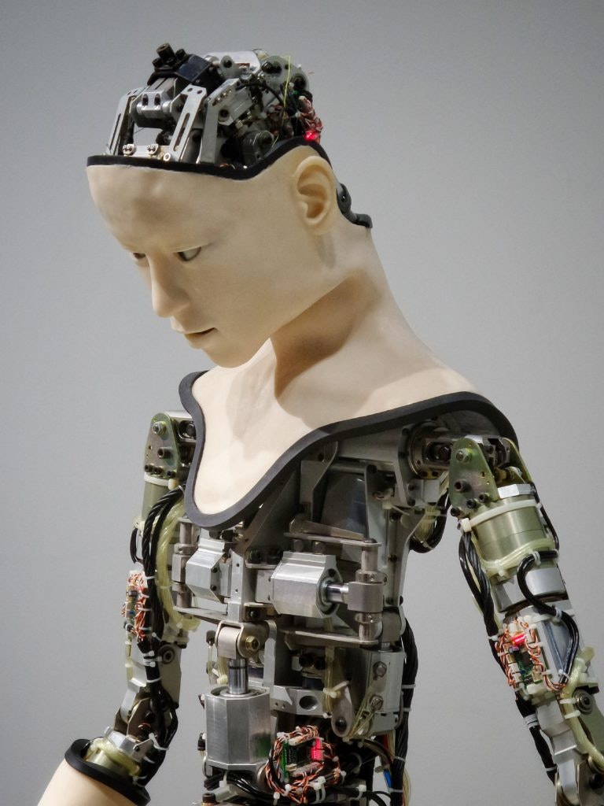

History of Robots: From Albertus Magnus to the Blade Runner
The story of our fascination with our own image
If you like reading about philosophy, here's a free, weekly newsletter with articles just like this one: Send it to me!
This is the second part of an overview of artificial men and the history of robots in literature and myth. Find the first part here.
Ancient China
Image by Jerry Wang on Unsplash
The Far East has its own legends of artificial men. The Chinese book Liezi (列子), a Daoist text from the 5th century BC, contains the following passage:
“Who is that man accompanying you?” asked the king.
“That, Sir,” replied Yen Shih, “is my own handiwork. He can sing and he can act.”
The king stared at the figure in astonishment. It walked with rapid strides, moving its head up and down, so that anyone would have taken it for a live human being. The artificer touched its chin, and it began singing, perfectly in tune. He touched its hand, and it began posturing, keeping perfect time. It went through any number of movements that fancy might happen to dictate. The king, looking on with his favourite concubine and other beauties, could hardly persuade himself that it was not real. (…)
[They] instantly took the robot to pieces to let the king see what it really was. And, indeed, it turned out to be only a construction of leather, wood, glue and lacquer, variously coloured white, black, red and blue. Examining it closely, the king found all the internal organs complete liver, gall, heart, lungs, spleen, kidneys, stomach and intestines. (…)
Drawing a deep breath, he exclaimed, “Can it be that human skill is on a par with that of the great Author of Nature?”
The European Middle Ages
Image by Bistrian Iosip on Unsplash
The Middle Ages brought a new dimension to the history of robots and the dream of the artificial man. Instead of art, now it was magic that provided the life force. Sometimes this magical power originated in God, sometimes it was a darker force that the magician himself controlled.

Albertus Magnus (1206-1280) was a bishop, scientist and philosopher. He had a reputation as an alchemist and magician. He is said to have created a “talking head” to guard the door to his rooms.
Publius Vergilius Maro (70-19 BC), a Roman poet, was in the Middle Ages believed to have been a magician. He was supposed to have created a “talking head which predicted the future” and a prostitute made of stone.
Let’s think for a moment about these two. How do they compare? And how is Vergil’s prostitute different from Pygmalion’s Galatea?
Obviously, Vergil’s head of stone is different from Albertus Magnus' in that it can predict the future. It thus has miraculous powers that go beyond Albertus Magnus’ creation. Since, in the European Middle Ages, the future was thought to be fully in God’s control, the power to predict it would probably point to some divine power being used in the creation of the talking head.
Your ad-blocker ate the form? Just click here to subscribe!
The idea of a prostitute made of stone is again the expression of an obvious male dream: that of a perfectly obedient and available woman substitute. In this regard, the stone prostitute is an early version of today’s inflatable sex dolls and tomorrow’s moving and talking sex and partner robots. It is therefore fundamentally different from Galatea, with whom Pygmalion fell in love, and whom the gods made into a full human being that is able to reciprocate love. A (stone) prostitute is, by the very nature of her occupation, not supposed to engage emotionally and is thus not perceived by her creator as a “full” person. The mention of cold “stone” as the material she’s made of is a further hint: this is not a warm, living thing, but a machine, something hard and cold, entirely devoid of human warmth.

The “artificial man” is not a new concept. Today, we call them robots, but many cultures have a myth about the creation of man and often it is a god who, through the use of divine powers, makes man out of some inanimate material.
In the late 16th century, Rabbi Judah Loew ben Bezalel, the chief rabbi of Prague, is said to have made a creature from mud to protect the Jews of his community. This creature was called the Golem. It could be awakened to life by writing a magical sign onto its forehead, the Schem. The Golem cannot speak and cannot act all by itself. It can only follow its master’s orders. It is easy to see that in a religious context the story has to be that way: it wouldn’t do to have man’s creations rival God’s. So the Golem, made by man, is inferior to the humans created directly by God. It is not a genuine human (like Galatea was!). You couldn’t fall in love with it, and it wouldn’t be able to reciprocate. It is, essentially, a robot, a zombie. A moving body without a soul, and it is interesting that here speech is what distinguishes real humans from the artefact Golem. In the end, like in many such stories, the Golem proves dangerous and has to be destroyed by writing a different sign (one meaning “death”) onto its forehead.
Modern myths and science fiction

Image by Franck V. on Unsplash
Early philosophers and early robots
Descartes (1596-1650), today considered one of the fathers of modern philosophy, thought that animals are nothing but intricate machines. Only man is different, because man has a soul. Descartes is a philosophical “dualist,” meaning that he thought that there are two kinds substances in the universe: there are material things and there are also immaterial souls. Souls are different in kind, and they cannot be reduced to something material. Today we would perhaps think that our “soul” or “thinking” is just a function of our material brain. Not so for Descartes. For him, material things have an extension in space, they have a weight and so on, while the soul has none of these properties. Consequently, it must be a thing of an entirely different kind.

The human mind is unique and we know of no other comparable phenomenon in the universe. The philosophy of mind (monism, dualism, computationalism) attempts to explain what exactly the mind is.
The idea of a soul is, in the Western tradition, motivated by Christian faith. If the souls after death can go to heaven or hell, then they must have an existence that is independent of the body they inhabited while they were alive on Earth. Christian faith requires a dualist conception of the soul.
Even in Descartes’ time, though, not everyone agreed with him. Julien O. de La Mettrie (1709-1751) opposed Descartes' dualism. He proposed that man is nothing but a machine. Soon, gifted engineers felt compelled to demonstrate how lifeless matter could be made to act in ways very similar to how animals and humans behaved.
Jacques de Vaucanson (in 1739) opened a new chapter in the history of robots when he created a mechanical duck which “digested” food. In reality, it only pretended to digest. It stored the food in a container and dropped prefabricated metabolic products from another container onto the ground. Wolfgang von Kempelen (1770) created a chess-playing “Turk” that appeared to be a chess-playing robot. In truth, though, there was a small man hidden inside the table in front of the figure who operated the machine. Still, it managed to fool masses of intelligent and critical observers for over 80 years.
Robots in modern literature
Zombies, and the stories about them, are not entirely unrelated to robots and AI. In the Voodoo cult on Haiti, a zombie is a dead person who has been re-animated by a magician. It can walk around and fulfil simple commands, but it has no will of its own and it can’t speak. Typically it also has no feelings. In this sense, it is very similar to the Golem, except that they originate in dead people rather than being artificially constructed from mud.
In Mary Shelley’s “Frankenstein” (1818) a creature is put together artificially and given life according to natural laws. Frankenstein, the monster’s creator, is a scientist, not a god or a priest. Eventually, Frankenstein’s monster, suffering from the rejection by human society, takes revenge on its creator. If you look at the time the book was written, this was the height of industrialisation in England. The time between 1812 and 1825 saw the creation of the first commercially viable steam locomotives. The first public gas light was demonstrated in 1807. In 1813, five years before Frankenstein, the Westminster Bridge was lit by gas lamps. The chemical industry had just got started with the production of sodium carbonate in 1791 and bleaching powder around 1800. It is no wonder, then, that Frankenstein’s monster does not require divine power to operate. It is given life by a scientific process, and its further fate mirrors the horrors that people of the time experienced in the hands of science and technology: the rise of smoke pollution, the poisoning of the Thames and its fish by gas companies in the 1820s, the expansion of slavery in the US to cover the need for cheap cotton, and child labour and 12-hour shifts in the steel industry. Frankenstein’s monster, like most technology of the time, comes with obvious drawbacks and dangers, and the destruction it causes in the life of its creator surely mirrors what Mary Shelley must have felt when she saw the changes that technology had brought to life in England during her own lifetime.
It is interesting to compare Frankenstein’s monster to the Golem and the Caribbean zombie. One could look for the presence of emotions and personhood, their ability to use language, their degree of artificiality vs naturalness, and the role of magic or engineering in their creation.
Robots in science fiction
The word “robot” itself comes from a novel by Karel Capek (1890-1938). It was used to denote an artificial creature that is made to work (Czech “robota” means “labour”).
20th and 21st century science fiction shows a whole range of robots that increasingly become more human-like in appearance and behaviour, although they keep being threatening and dangerous.
HAL 9000 (in Arthur Clarke’s “2001”) is not humanoid, but it has a very human-like intelligence (including emotions like fear and pride) inside a computer “body.” Like in other stories of artificial men, HAL’s human-ness is expressed through the use of human language. HAL can talk just like a human being, and this is what demonstrates that it is equivalent to a human being. Towards the end of the story, when the astronauts disable HAL by plugging out its memory modules, the computer step by step loses its higher mental functions, and in parallel it loses its language. In the end, it is a mere machine and unable to speak: just like the Golem and the Caribbean zombie.
Star Trek’s “Data” is a humanoid machine without emotions, except that it is driven by the wish to “be more human.” This echoes the lack of emotions in the Golem, but otherwise Data is a much more capable machine. In terms of appearance, he cannot be mistaken for a human, having a distinct skin colour that immediately identifies him as an artefact.
Much harder to identify as robots are the artificial creatures in the movie series “Alien.” Ash, the undercover android who turns against the human heroine, has been extensively studied as a projection of typical fears of humans towards “evil” AI. These fears are amplified when artefacts disguise themselves in a human shell and become, at first sight, indistinguishable from biological humans.
Similar emotions were evoked when a demonstration of Google’s Duplex Assistant in 2018 called an unsuspecting hairdresser on the phone (video link) to make an appointment. The program had been designed to use language as naturally as possible, even interjecting “mm-hmm” and hesitating where appropriate. You can easily find the recording of this famous phone call on the Internet. The demo was received with enthusiasm by technicians, but freaked out everyone else, since the program very successfully managed to conceal the fact that it was a program. Soon, the public called for legislation to force machines to identify themselves as machines in such situations, and Google promised to make it clear in future experiments of this kind that the calling agent is a machine.
In a further step in this direction, in the movie “Blade Runner” (1982) androids can not even tell themselves whether they are human or not. They have feelings and artificially implanted childhood memories, and can be identified only with a intricate physiological and psychological test.
This leads to another interesting question: If we could create robots that not only look and behave like humans, but also feel like humans and believe themselves to be actual humans (although they are not): would there still be any relevant difference between such robots and humans? Would they have become genuine human beings? Would we have the right to “terminate” them, or would that be murder?
Thanks for reading! If you liked this story, please share it and subscribe so that you never miss a post!